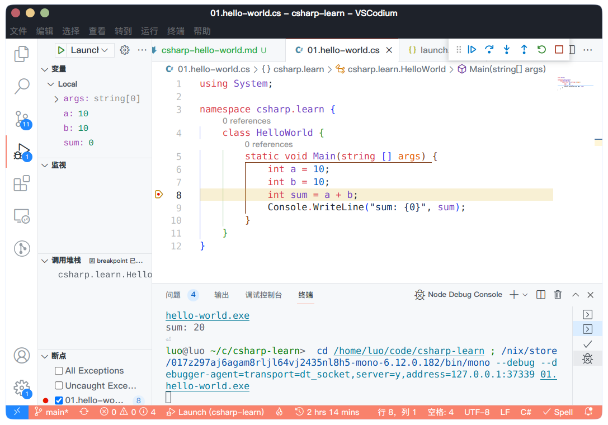

自己在 NixOS 上学习 C# 的一些笔记。
安装 Mono 和 .Net SDK
C# 在 .Net 之上运行，安装 .Net SDK：
1
| nix-shell -p dotnetCorePackages.sdk_6_0 mono
|
Hello World
C# 的程序结构一般长这样，以 cs 作为拓展名：
1
2
3
4
5
6
7
8
9
10
|
using System;
namespace com.example {
class HelloWorld {
static void Main(string[] args) {
Console.WriteLine("Hello World");
}
}
}
|
C# 的语法结构和 Java、C++ 类似：
- using 可以用来导入命名空间
- 程序的入口是 Main 函数，这里的语法和 Java 类似
- Console.WriteLine 方法类似于 C 里的 printf，这个方法从 System 命名空间里引入
编译执行
安装 mono 使用 csc 编译程序：
编译通过后会在当前目录生成 hello_world.exe：
1
2
| $ file hello_world.exe
hello_world.exe: PE32 executable (console) Intel 80386 Mono/.Net assembly, for MS Windows
|
运行：
1
2
| $ mono hello_world.exe
Hello World
|
Vscode 插件
主要安装两个插件：
C# 插件其实有调试功能，但这个功能只能在 Windows 里使用，在 Linux 下需要安装 Mono Debug 来进行调试。
1
2
3
4
5
6
7
8
9
10
11
12
13
14
15
| environment.systemPackages = with pkgs; [
(vscode-with-extensions.override {
vscode = vscodium;
vscodeExtensions = with vscode-extensions; [
vscode-extensions.ms-dotnettools.csharp
] ++ pkgs.vscode-utils.extensionsFromVscodeMarketplace [
{
name = "mono-debug";
publisher = "ms-vscode";
version = "0.16.3";
sha256 = "sha256-6IU8aP4FQVbEMZAgssGiyqM+PAbwipxou5Wk3Q2mjZg=";
}
];
})
];
|
Debug
主要参考了 CSDN 上的文章：https://blog.csdn.net/qinyuanpei/article/details/57419539
tasks.json：以 -debug 模式编译 c# 源文件
1
2
3
4
5
6
7
8
9
10
11
12
13
14
15
16
| {
"version": "2.0.0",
"tasks": [
{
"label": "build",
"command": "csc",
"type": "shell",
"args": [
"-debug",
"${file}"
],
}
]
}
|
launch.json：通过 mono debug 插件进行调试
1
2
3
4
5
6
7
8
9
10
11
12
13
14
15
| {
"version": "0.2.0",
"configurations": [
{
"type": "mono",
"name": "Launch",
"request": "launch",
"program": "${fileDirname}/${fileBasenameNoExtension}.exe",
"cwd": "${workspaceFolder}",
"preLaunchTask": "build",
"runtimeExecutable": "mono",
"console": "integratedTerminal",
}
]
}
|
如果 vscode 报错提示找不到 mono runtime，可以将 runtimeExecutable 设置成 mono 的绝对路径
就可以在源文件里设置断点，F5 调试了：
